This vignette illustrates the sort of analysis used to generate the plant figure (Fig 2) in the manuscript, i.e. modelling the dynamics of individual plants. It also shows some of the features of working with plant components of the model.
Plants are constructed with the FF16_Plant function. That function takes as its only argument a “strategy” object; the default is FF16_Strategy, but alternative strategies can be provided (see below). The “strategy” object contains all the physiological underpinning the dynamics of individual plants and entire metapopulations.
Plants are an R6 class, and have a number of elements and fields that can be accessed:
## <Plant<FF16>>
## Inherits from: <Plant>
## Public:
## .ptr: externalptr
## area_leaf_above: function (h)
## clone: function (deep = FALSE)
## compute_vars_phys: function (environment)
## fecundity: active binding
## germination_probability: function (environment)
## height: active binding
## initialize: function (ptr)
## internals: active binding
## mortality: active binding
## mortality_probability: active binding
## ode_names: active binding
## ode_rates: active binding
## ode_size: active binding
## ode_state: active binding
## reset_mortality: function ()
## strategy: active bindingThings labelled ‘active binding’ are “fields” and can be read from and (sometimes) set:
## [1] 0.3441948## [1] 10## [1] 0## [1] 0Height, fecundity and mortality are the three key variables propagated by the internal system of differential equations:
## [1] 10 0 0 0 0To compute rates of change for these variables we need a light environment. The function fixed_environment creates an environment that has the same canopy openness (here 100%) at all heights. The plant does not affect this light environment.
The compute_vars_phys method computes net mass production for the plant, and from that demographic rates:
## [1] NA NA NA NA NA## [1] 9.231625e-01 1.002618e-02 6.905594e-05 3.132290e-04 1.687620e+00Some internals from the calculations are available in the internals field:
## [1] "area_leaf" "height" "height_dt"
## [4] "mortality" "mortality_dt" "fecundity"
## [7] "fecundity_dt" "area_heartwood" "area_heartwood_dt"
## [10] "mass_heartwood" "mass_heartwood_dt"Height growth rate
## [1] 0.9231625Leaf area (m^2)
## [1] 7.312332There’s not actually that much that can be done with Plant objects; they’re designed to be small and light to work well with the larger simulation code that does not particularly care about most of the internal calculations.
Because of this, we have a “PlantPlus” object that exposes more of a strategy, and in addition stem diameter growth:
## [1] "mass_leaf" "area_leaf"
## [3] "height" "area_sapwood"
## [5] "mass_sapwood" "area_bark"
## [7] "mass_bark" "area_heartwood"
## [9] "mass_heartwood" "area_stem"
## [11] "mass_root" "mass_live"
## [13] "mass_total" "mass_above_ground"
## [15] "diameter_stem" "assimilation"
## [17] "respiration" "turnover"
## [19] "net_mass_production_dt" "fraction_allocation_reproduction"
## [21] "fraction_allocation_growth" "fecundity_dt"
## [23] "area_leaf_dt" "darea_leaf_dmass_live"
## [25] "height_dt" "area_heartwood_dt"
## [27] "mass_heartwood_dt" "mortality_dt"
## [29] "mortality" "fecundity"
## [31] "dheight_darea_leaf" "dmass_sapwood_darea_leaf"
## [33] "dmass_bark_darea_leaf" "dmass_root_darea_leaf"
## [35] "area_sapwood_dt" "area_bark_dt"
## [37] "area_stem_dt" "ddiameter_stem_darea_stem"
## [39] "diameter_stem_dt" "mass_root_dt"
## [41] "mass_live_dt" "mass_total_dt"
## [43] "mass_above_ground_dt"Some of the internals require compute_vars_internals to be run (the zapsmall function rounds numbers close to zero to zero):
## mass_leaf area_leaf
## 0.000 0.000
## height area_sapwood
## 0.344 0.000
## mass_sapwood area_bark
## 0.000 0.000
## mass_bark area_heartwood
## 0.000 0.000
## mass_heartwood area_stem
## 0.000 0.000
## mass_root mass_live
## 0.000 0.000
## mass_total mass_above_ground
## 0.000 0.000
## diameter_stem assimilation
## 0.000 0.015
## respiration turnover
## 0.007 0.000
## net_mass_production_dt fraction_allocation_reproduction
## 0.000 0.000
## fraction_allocation_growth fecundity_dt
## 1.000 0.000
## area_leaf_dt darea_leaf_dmass_live
## 0.000 3.043
## height_dt area_heartwood_dt
## 0.334 0.000
## mass_heartwood_dt mortality_dt
## 0.000 0.010
## mortality fecundity
## 0.000 0.000
## dheight_darea_leaf dmass_sapwood_darea_leaf
## 871.275 0.052
## dmass_bark_darea_leaf dmass_root_darea_leaf
## 0.009 0.070
## area_sapwood_dt area_bark_dt
## 0.000 0.000
## area_stem_dt ddiameter_stem_darea_stem
## 0.000 3241.596
## diameter_stem_dt mass_root_dt
## 0.000 0.000
## mass_live_dt mass_total_dt
## 0.000 0.000
## mass_above_ground_dt
## 0.000This PlantPlus object also includes heartwood area and mass as two more variables for the ODE system (this might move into Plant soon – see this issue). Tracking of these variables is needed to estimate stem diameter growth
## [1] "height" "mortality" "fecundity" "area_heartwood"
## [5] "mass_heartwood"Plants are a type of reference object. They are different to almost every other R object you regularly interact with in that they do not make copies when you rename them. So changes to one will be reflected in another.
## [1] 1## [1] 1Rather than setting plant physical sizes to given values, it will often be required to grow them to a size. This is required to compute seed output (integrated over the plant’s lifetime) stem diameter, survival, etc; basically everything except for height.
It’s possible to directly integrate the equations exposed by the plant, using the ode_state field, compute_vars_phys method and ode_rates field. For example, we can use the R package deSolve:
derivs <- function(t, y, plant, env) {
plant$ode_state <- y
plant$compute_vars_phys(env)
list(plant$ode_rates)
}
pl <- FF16_Plant()
tt <- seq(0, 50, length.out=101)
y0 <- setNames(pl$ode_state, pl$ode_names)
yy <- deSolve::lsoda(y0, tt, derivs, pl, env=env)
plot(height ~ time, yy, type="l")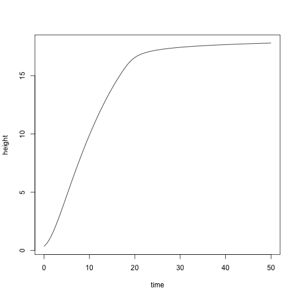
Alternatively, it might desirable to grow a plant to a particular size. We could interpolate from the previous results easily enough. E.g., to find a plant with height of 15 m:
that happened approximately here:
Interpolate to find the state:
y <- apply(yy[, -1], 2, function(y) spline(yy[, "time"], y, xout=t)$y)
pl2 <- FF16_Plant()
pl2$ode_state <- y
pl2$compute_vars_phys(env)Plant is expected height:
## [1] 15And at this height, here is the total seed production:
## [1] 289.9376To make this type of operation easier, we provide the function grow_plant_to_time
Here is the result, plotted against the result obtained from using deSolve above:
plot(height ~ tt, res$state, type="l", las=1,
xlab="Time (years)", ylab="Height (m)")
points(height ~ time, yy, col="grey", cex=.5)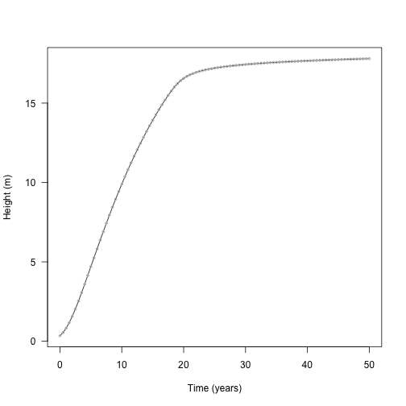
Completing the set, plant also provides a function for growing plants to a particular size; grow_plant_to_size. This takes any size measurement in the plant and can grow the plant to that size. So, for height:
pl <- FF16_PlantPlus(FF16_Strategy())
heights <- seq(pl$height, pl$strategy$hmat, length.out=20)
res <- grow_plant_to_size(pl, heights, "height", env)This returns a vector of times; this is when the heights were achieved
## [1] 0.000000 1.545681 2.523393 3.365033 4.155087 4.926508 5.696593
## [8] 6.476387 7.274127 8.096757 8.950785 9.842785 10.779771 11.769706
## [15] 12.821689 13.946774 15.158668 16.476692 17.957500 20.137320A matrix of state:
## height mortality fecundity area_heartwood mass_heartwood
## [1,] 0.3441948 0.00000000 0.000000e+00 0.000000e+00 0.000000e+00
## [2,] 1.1995465 0.01545682 7.754892e-20 1.280271e-07 6.544158e-05
## [3,] 2.0548958 0.02523396 5.654011e-18 9.826616e-07 8.617440e-04
## [4,] 2.9102485 0.03365038 2.252986e-16 3.837305e-06 4.790943e-03
## [5,] 3.7656006 0.04155098 6.750246e-15 1.081677e-05 1.755419e-02
## [6,] 4.6209512 0.04926531 1.710259e-13 2.510437e-05 5.019027e-02And a list of plants
## <PlantPlus<FF16>>
## Inherits from: <PlantPlus>
## Public:
## .ptr: externalptr
## area_heartwood: active binding
## area_leaf: active binding
## area_leaf_above: function (h)
## clone: function (deep = FALSE)
## compute_vars_growth: function ()
## compute_vars_phys: function (environment)
## fecundity: active binding
## germination_probability: function (environment)
## height: active binding
## initialize: function (ptr)
## internals: active binding
## mass_heartwood: active binding
## mortality: active binding
## ode_names: active binding
## ode_rates: active binding
## ode_size: active binding
## ode_state: active binding
## strategy: active binding
## to_plant: function ()## [1] 8.042356## [1] 8.042356Also included is trajectory; the points that the ODE stepper used with the system state at those times.
There is a convenience function run_plant_to_heights that achieves the same thing. Alternatively, and variable within plant$internals can be used, so long as it increases monotonically with respect to time.
pl <- FF16_PlantPlus(FF16_Strategy())
mass <- seq_log(pl$internals$mass_above_ground + 1e-8, 1000, length.out=21)
res_mass <- grow_plant_to_size(pl, mass, "mass_above_ground", env,
time_max=100, warn=FALSE)(this seems on the low side - see this issue).
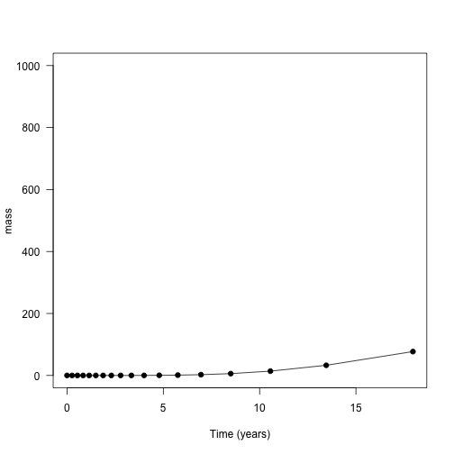
With all these bits in place, let’s look at growth trajectories of two species that differ in their LMA values. This what is presented In Fig. 2a of the paper.
Low LMA (“fast growth”) species
High LMA (“low growth”) species
Note that we’re using an alternative way of specifying strategies here, to trigger our “hyper-parametrisation” approach. This may be simplified in future, but currently the “hyper-parametrisation” function resides on the p object.
Then, generate a sequence of heights to collect information at
(they are different for the two plants because they have different starting heights, the lower LMA of s1 allows it to achieve a greater initial height for given seed mass)
heights1 <- seq(pl1$height, s1$hmat, length.out=100L)
heights2 <- seq(pl2$height, s2$hmat, length.out=100L)
dat1 <- grow_plant_to_height(pl1, heights1, env,
time_max=100, warn=FALSE, filter=TRUE)
dat2 <- grow_plant_to_height(pl2, heights2, env,
time_max=100, warn=FALSE, filter=TRUE)
plot(dat1$trajectory[, "time"], dat1$trajectory[, "height"],
type="l", lty=1,
las=1, xlab="Time (years)", ylab="Height (m)")
lines(dat2$trajectory[, "time"], dat2$trajectory[, "height"], lty=2)
legend("bottomright", c("Low LMA", "High LMA"), lty=1:2, bty="n")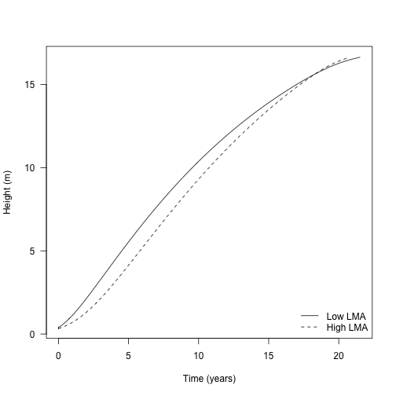
Similarly, growing the plants under lower light:
env_low <- fixed_environment(0.5)
dat1_low <- grow_plant_to_height(pl1, heights1, env_low,
time_max=100, warn=FALSE, filter=TRUE)
dat2_low <- grow_plant_to_height(pl2, heights2, env_low,
time_max=100, warn=FALSE, filter=TRUE)
cols <- c("black", "#e34a33")
plot(dat1$trajectory[, "time"], dat1$trajectory[, "height"],
type="l", lty=1,
las=1, xlab="Time (years)", ylab="Height (m)")
lines(dat2$trajectory[, "time"], dat2$trajectory[, "height"], lty=2)
lines(dat1_low$trajectory[, "time"], dat1_low$trajectory[, "height"],
lty=1, col=cols[[2]])
lines(dat2_low$trajectory[, "time"], dat2_low$trajectory[, "height"],
lty=2, col=cols[[2]])
legend("bottomright",
c("High light", "Low light"), lty=1, col=cols,
bty="n")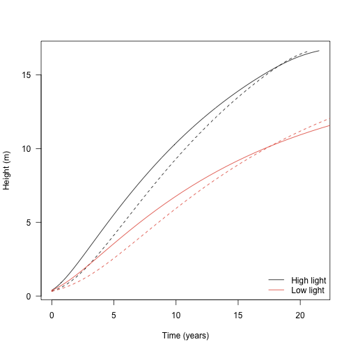
The height growth rate is the derivative of height with respect to time - the slope of the plot above. It is really the core quantity in the model; the actual heights are computed by solving the set of ODEs that includes height growth rate.
Growth rate with respect to height shows a hump-shaped pattern that is affected by both traits and by light environment. To extract this information from the trajectories takes a little more work though.
Here is a plant from part way through one run
Here is the set of ODE state variables:
## height mortality fecundity area_heartwood mass_heartwood
## 8.412120e+00 7.797210e-02 9.998839e-08 3.403727e-04 1.262008e+00And the set of rate variables
## height mortality fecundity area_heartwood mass_heartwood
## 9.530474e-01 1.003019e-02 3.243850e-07 1.780143e-04 8.068135e-01…however, the rates might not be correct. They are whatever was left by the ODE stepper when it was advancing the plant, so it’s best to update them:
## height mortality fecundity area_heartwood mass_heartwood
## 9.530474e-01 1.003019e-02 3.243850e-07 1.780143e-04 8.068135e-01(in this case they are the same because the light environment is unchanging, but that not be the case generally)
Alternatively, we can access the height growth rate via the internals, which is the same as accessing directly from the ODE rates but more explicit:
## [1] 0.9530474## [1] 0.9530474Collecting height growth for all plants:
dhdt1 <- sapply(dat1$plant, function(x) x$internals$height_dt)
dhdt2 <- sapply(dat2$plant, function(x) x$internals$height_dt)
dhdt1_low <- sapply(dat1_low$plant, function(x) x$internals$height_dt)
dhdt2_low <- sapply(dat2_low$plant, function(x) x$internals$height_dt)
plot(dat1$time, dhdt1, type="l", lty=1,
las=1, xlab="Time (years)", ylab="Height growth rate (m / yr)")
lines(dat2$time, dhdt2, lty=2)
lines(dat1_low$time, dhdt1_low, lty=1, col=cols[[2]])
lines(dat2_low$time, dhdt2_low, lty=2, col=cols[[2]])
legend("topright",
c("High light", "Low light"), lty=1, col=cols,
bty="n")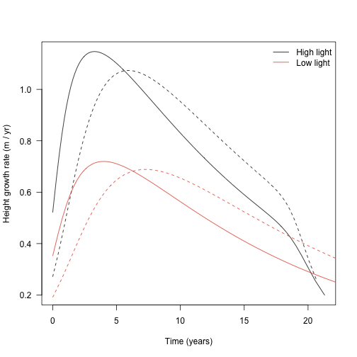
Alternatively, change in height plotted against height itself:
ylim <- c(0, max(dhdt1))
plot(dat1$state[, "height"], dhdt1, type="l", lty=1,
las=1, xlab="Height (m)", ylab="Height growth rate (m / yr)", ylim=ylim)
lines(dat2$state[, "height"], dhdt2, lty=2)
lines(dat1_low$state[, "height"], dhdt1_low, lty=1, col=cols[[2]])
lines(dat2_low$state[, "height"], dhdt2_low, lty=2, col=cols[[2]])
legend("topright",
c("High light", "Low light"), lty=1, col=cols,
bty="n")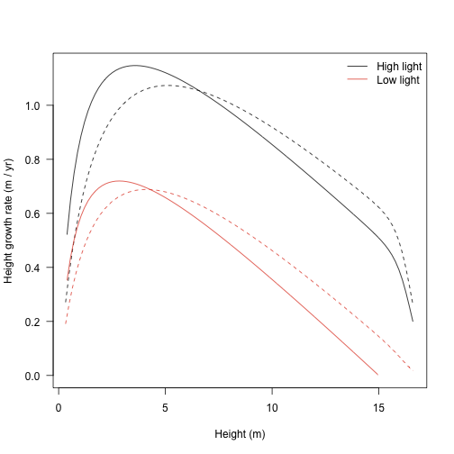
Over a plant’s life, allocation to different structures varies. This is captured by a set of variables stored within the internals: e.g., mass_leaf mass_sapwood.
## [1] 0.3428489## [1] 4.034067(these numbers seem a bit off: one of the motivations here is to develop and use better models of plant allometry. The parameterisation used at present are derived from adults and perform poorly with small plants. However, based on height / area relationships [Falster 2011, supporting information], for an 8m tall plant total leaf areas of 5-10 m are plausible and with an LMA of 0.08 that implies a total dry weight of 400 - 800 g).
Total live dry mass fraction to leaf and stem can be computed as:
f <- function(p) {
p_ints <- p$internals
c(leaf=p_ints$mass_leaf / p_ints$mass_live,
sapwood=p_ints$mass_sapwood / p_ints$mass_live)
}
cols_part <- c("black", "#045a8d")
matplot(dat1$state[, "height"], t(sapply(dat1$plant, f)),
type="l", col=cols_part, lty=1, ylim=c(0, 1),
xlab="Height (m)", ylab="Fractional allocation", las=1)
matlines(dat2$state[, "height"], t(sapply(dat2$plant, f)),
col=cols_part, lty=2)
legend("topright", c("Sapwood", "Leaf"), lty=1, col=rev(cols_part), bty="n")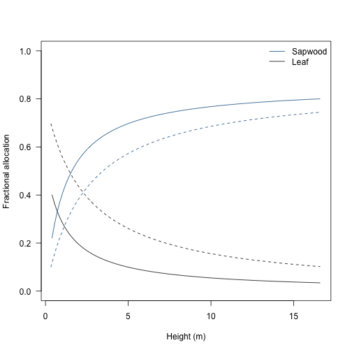
Relative allocation to leaf mass drops steeply as a plant grows and is replaced by allocation to sapwood mass.
The growth rates vary with both size and light environment (see above).
pl <- FF16_PlantPlus()
pl$height <- 10
pl$compute_vars_phys(fixed_environment(1.0))
pl$internals$height_dt # in full light## [1] 0.9231625## [1] 0.4522332At some point the plant cannot maintain positive carbon balance and therefore cannot grow; for example at 25% canopy openness:
## [1] 0The light level at which carbon gain becomes zero is the “whole plant light compensation point”.
## [1] 0.2991714Consider a vector of canopy opennesses:
Height growth rate increases in a saturating fashion with increasing canopy openness from the light compensation point.
f <- function(x, pl) {
env <- fixed_environment(x)
pl$compute_vars_phys(env)
pl$internals$height_dt
}
x <- c(lcp, openness[openness > lcp])
plot(x, sapply(x, f, pl), type="l", xlim=c(0, 1),
las=1, xlab="Canopy openness", ylab="Height growth rate (m / yr)")
points(lcp, 0.0, pch=19)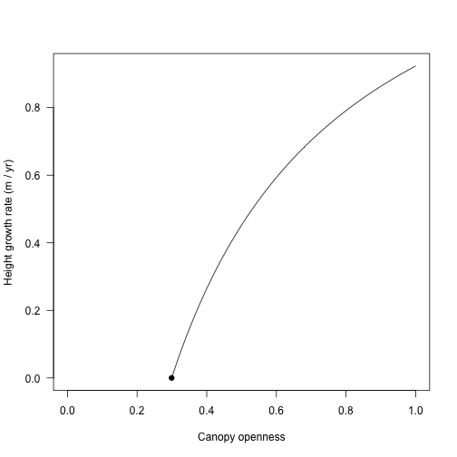
g <- function(x, pl) {
lcp <- lcp_whole_plant(pl)
x <- c(lcp, openness[openness > lcp])
cbind(x=x, y=sapply(x, f, pl))
}Now, consider this for a seedling and for a plant at half its maximum size size:
pl_seed <- FF16_PlantPlus(s1)
y_seed <- g(openness, pl_seed)
pl_adult <- FF16_PlantPlus(s1)
pl_adult$height <- pl_adult$strategy$hmat / 2
y_adult <- g(openness, pl_adult)
cols_height <- c("#31a354", "black")
ymax <- max(y_seed[, 2], y_adult[, 2])
plot(y_seed, type="l", col=cols_height[[1]],
xlim=c(0, 1), ylim=c(0, ymax), las=1,
xlab="Canopy openness", ylab="Height growth year (m / yr)")
lines(y_adult, col=cols_height[[2]])
legend("bottomright", c("Seedling", "Adult"), lty=1, col=cols_height, bty="n")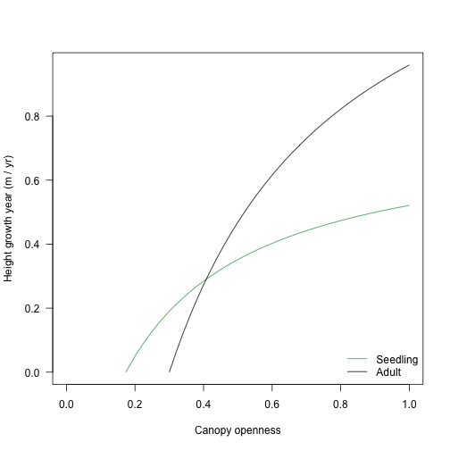
The light compensation point and curve varies with traits, too:
pl2_seed <- FF16_PlantPlus(s2)
pl2_adult <- FF16_PlantPlus(s2)
pl2_adult$height <- pl2_adult$strategy$hmat / 2
y2_seed <- g(openness, pl2_seed)
y2_adult <- g(openness, pl2_adult)
ymax <- max(ymax, y2_seed[, 2], y2_adult[, 2])
plot(y_seed, type="l", col=cols_height[[1]],
xlim=c(0, 1), ylim=c(0, ymax), las=1,
xlab="Canopy openness", ylab="Height growth year (m / yr)")
lines(y_adult, col=cols_height[[2]])
lines(y2_seed, col=cols_height[[1]], lty=2)
lines(y2_adult, col=cols_height[[2]], lty=2)
legend("bottomright", c("Seedling", "Adult"), lty=1, col=cols_height, bty="n")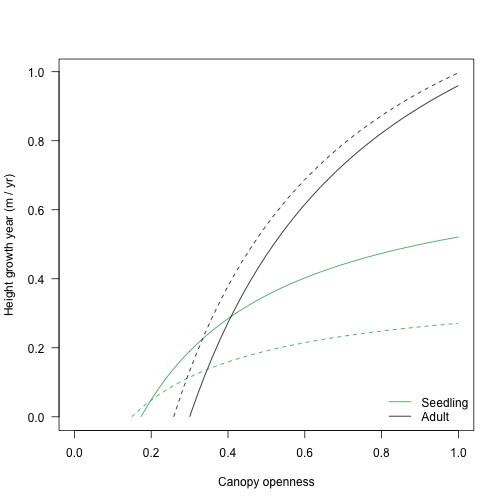
Note that the traits with the lowest growth rate in most lights while a seedling (dotted lines) has the highest growth rate in all lights as an adult.